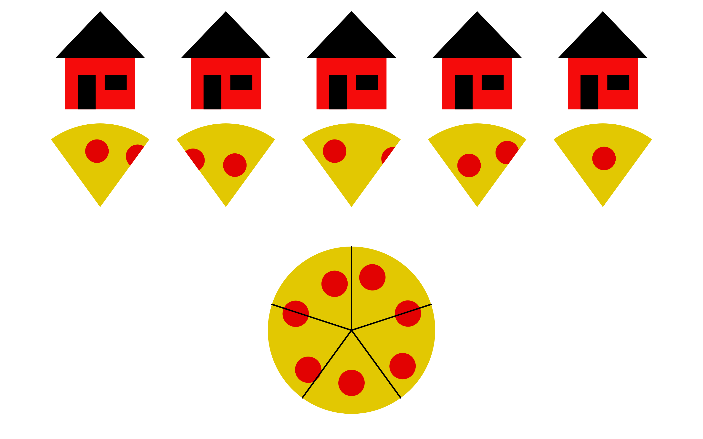

Nun wollen wir uns mit Zahlen befassen, die zwischen den natürlichen Zahlen liegen.
Meine Herangehensweise wird etwas anders sein als es in Schulen getan wird. Das hat damit zu tun, dass ich es so für besser halte.
Ich will noch eine Warnung aussprechen: Ich habe hierfür ein paar Schreibweisen erfunden. Ich werde natürlich auch die üblichen Schreibweisen einführen, aber das eben erst etwas später.
Anteile
Für diesen Abschnitt sind wir Pizzalieferanten eines eher unkonventionellen Pizzarestaurants.
Gehen wir davon aus, wir wollen eine Pizza auf eine bestimmte Zahl von Häusern verteilen, hier sind es als Beispiel fünf.
Wie soll das gehen? Wir haben ja nur eine Pizza. Da kommt unser Arbeitgeber ins Spiel. Die verkaufen nämlich Pizzen jeder erdenklichen Größe, also auch einzelne Pizzastücke. Wir schneiden also die eine Pizza in fünf Teile. Dann bekommt jedes Haus ein Teil davon.

Jetzt müsste es doch eine Zahl geben, die angibt, wie viele Pizzen jedes Haus bekommt. Und tatsächlich gibt es sie.
Diese Zahl heißt "ein Fünftel" und wird (von mir) so geschrieben: "⌜5" (man kann dazu "Ecke fünf" sagen).
Wir erkennen, dass ein Fünftel zwischen Null und Eins liegen muss, denn es ist ja mehr als keine Pizza, aber auch weniger als eine Pizza.
Eins
Wenn wir nur ein Haus haben, bekommt das ja die ganze Pizza, also
⌜1 = 1
Die eins ist also auch von der "Kante" das neutrale Element.
Mehrere Pizzen
Sagen wir, wir müssen mehr als eine Pizza verteilen, zum Beispiel drei. Wie viel bekommt jetzt jedes Haus?
Die Antwort erhält man wie folgt: Wir legen erst alle Pizzen bis auf eine beiseite. Dann verteilen wir die eine Pizza auf die Häuser.
Das gleiche machen wir dann mit der nächsten Pizza und auch mit der dritten. Am Ende haben wir alle Pizzen verteilt und wie viele Pizzen hat jedes Haus bekommen?
Nun, da wir drei mal ein Fünftel auf jedes Haus verteilt haben, ist die Antwort "3 • ⌜5". Auch dies ist eine neue Zahl, die wir erstmal nicht anders schreiben können.
Aber intuitiv ergibt es Sinn: wir legen drei dieser Fünftel zusammen und haben damit eine neue Zahl, die dreimal so groß ist, aber immer noch kleiner als Eins.
Was, wenn wir wollen, dass jedes Haus eine Pizza bekommt? Dann brauchen wir natürlich fünf Pizzen. Aber, wenn wir die gleiche Logik von eben anwenden, müsste jedes Haus "5 • ⌜5" Pizzen bekommen.
Dies lässt nur einen Schluss zu, und zwar:
5 • ⌜5 = 1
Dieser Fakt gilt für jede Zahl, nicht nur die fünf.
Wenn wir das ganze jetzt weiter analysieren, stellen wir fest, dass 10 • ⌜5 = (2 • 5) • ⌜5 ist.
Weil Multiplikation ja immer noch, auch mit diesen neuen Zahlen, Assoziativ sein soll, können wir sagen, dass dann das folgende gilt.
10 • ⌜5 = (2 • 5) • ⌜5 = 2 • (5 • ⌜5) = 2 • 1 = 2
Nach dem gleichen Muster gilt dann also "15 • ⌜5 = 3" und so weiter.
Andere Produkte können wir mit der Distributivität vereinfachen:
13 • ⌜5 = (10 + 3) • ⌜5 = (10 • ⌜5) + (3 • ⌜5) = 2 + (3 • ⌜5)
Die Zahl "2 + (3 • ⌜5)" lässt sich leider nicht einfacher schreiben (man könnte sogar behaupten, "13 • ⌜5" wäre einfacher und damit gar nicht mal falsch liegen) aber diese Schreibweise lässt einen auf den ersten Blick sehen, dass die Zahl zwischen zwei und drei liegt.
Null
Wenn wir keine Häuser haben, wie viele Pizzen bekommt jedes Haus?
Diese Frage ergibt keinen Sinn, da es keine Häuser gibt, an die man Pizzen verteilen könnte.
Ganz egal, welchen Wert man dem geben wollte, es wäre nicht richtig. Der Grund dafür ist folgender.
Wir haben ja festgestellt, dass "5 • ⌜5 = 1" ist und dass man hier die 5 gegen jede andere Zahl austauschen könnte.
Das hieße aber, dass "0 • ⌜0 = 1" gelten müsste. Aber auf der linken Seite steht ja ein Produkt mit Null. Wir erinnern uns: Ein Produkt mit Null ist immer Null. Damit diese Gleichung erfüllt wäre, müsste Null also gleich Eins sein.
Das kann und wird nicht funktionieren, wir hatten ja gesagt, Eins sei größer als Null. Darum kann es keine Zahl "⌜0" geben.
Pizzen und Häuser gleichermaßen
Wenn wir doppelt so viele Pizzen auf doppelt so viele Häuser verteilen, bekommt jedes Haus trotzdem noch so viel wie vorher.
Das kann man sich leicht vorstellen und es funktioniert auch mit dreimal, viermal oder jeder anderen Vervielfachung von Häusern und Pizzen zugleich.
Wenn wir also 2 Pizzen auf 10 Häuser verteilen, ist es genau so als würden wir eine Pizza auf 5 Häuser verteilen.
Wir halten fest:
2 • ⌜10 = 1 • ⌜5
Wenn wir das ganze verdreifachen, erhalten wir
3 • ⌜15 = 1 • ⌜5
Nach dem selben Muster geht es für immer weiter.
(Wer das Muster nicht erkennt, der bemerke: "2 • ⌜10 = 2 • ⌜(2 • 5)" und "3 • ⌜15 = 3 • ⌜(3 • 5)")
Übliche Schreibweise
Es ist so weit. Wir können leider nicht ewig im schönen Traumland der "Ecke" bleiben.
Die tatsächliche Schreibweise für Anteile kann leicht in die Irre führen.
Hier ist sie.
Erstens wird "⌜5 = 1/5", "⌜3 = 1/3", ... geschrieben.
Dann ist es natürlich logisch, und auch nicht falsch, dass man "3 • ⌜5" als "3 • 1/5" schreibt.
Aber man schreibt dies viel öfter als "3/5".
Ich werde ab jetzt trotzdem immer noch mit einem Fuß im Land der Ecke stehen bleiben. Meiner Meinung nach lassen sich die Prinzipien mit der Ecke viel besser darstellen.
Was ich bisher nur "Anteile" oder "Zahlen zwischen Null und Eins" gennant habe, hat einen Speziellen Namen: Brüche.
Diesen Namen finde ich nicht gut, da er verheimlicht, dass diese Zahlen auch einfach nur Zahlen sind.
In dem Bruch "3/5" wird "3" als Zähler und "5" als Nenner bezeichnet.
Das vervielfachen von Pizzen und Häusern zugleich hat auch einen eigenen Namen: Erweitern.
Als Beispiel: "1 • ⌜5 = 3 • ⌜15" schreibt man als
1/5 = 3/15
Das ist zwar kürzer, versteckt aber die wirkliche Funktion dahinter.
Das Muster, dass ich vorher nicht erklärt habe, ist übrigens, den Nenner und Zähler immer mit der gleichen Zahl zu multiplizieren.
Ich habe damit bis jetzt gewartet, weil man hierfür doch die Begriffe Nenner und Zähler braucht und ich nicht noch mehr eigene Begriffe erfinden wollte.
Die Menge der Bruchzahlen
𝔹
Auch dieser Mengenname ist von mir erfunden
Diese Menge enthält alle Zahlen, die wir bisher kennen, also alle natürlichen Zahlen und alle Anteile (auch deren Vielfache).
Ich will es noch mal deutlich sagen: Alle Zahlen sind hier gleichberechtigt.
Nur weil die natürlichen Zahlen einfacher zu benutzen und verstehen sind, heißt das nicht, dass sie mathematisch irgendwas von den Anteilszahlen unterscheidet.
Nun wollen wir sehen, wie man alle unsere neuen und alten Zahlen addiert und multipliziert (wie man zwei natürliche Zahlen addiert/multipliziert, wissen wir ja schon).
Addition
Wenn die Zahl unter der Ecke gleich ist, ist es einfach.
⌜5 + ⌜5 = 2 • ⌜5
1/5 + 1/5 = 2/5
Dies liegt einfach daran, wie die Multiplikation funktioniert (wie sie definiert ist).
Mit Vielfachen ist es auch einfach, wir brauchen nur die Distributivität.
(3 • ⌜5) + (8 • ⌜5) = (3 + 8) • ⌜5 = 12 • ⌜5
3/5 + 8/5 = (3+8)/5 = 12/5
Hier sieht man ein Beispiel dafür, wie die Bruchschreibweise wichtige Vorkommnisse (das Verwenden der Distributivität) versteckt.
Wenn wir aber zwei verschiedene Zahlen unter der Ecke (Nenner) haben, was machen wir dann?
Wir erweitern. Und das jeweils mit einer anderen Zahl, sodass beide Nenner gleich sind.
⌜2 + ⌜3 = (3 • ⌜6) + (2 • ⌜6) = 5 • ⌜6
1/2 + 1/3 = 3/6 + 2/6 = 5/6
Als Faustregel, um die Zahl zu wählen, mit der man jeden Bruch erweitert, gilt folgendes.
Man nehme immer den Nenner des jeweils anderen Bruches. Diese Regel funktioniert immer und ist nie falsch, auch wenn es manchmal noch kleinere Möglichkeiten gibt.
Hier ein Beispiel:
⌜2 + ⌜6 = (6 • ⌜12) + (2 • ⌜12) = 8 • ⌜12
1/2 + 1/6 = 6/12 + 2/12 = 8/12
Besonders aufmerksame Leser werden feststellen, dass "8 • ⌜12 = 4 • ⌜6" ("8/12 = 4/6").
In der Tat wäre folgendes einfacher gewesen.
⌜2 + ⌜6 = (3 • ⌜6) + (1 • ⌜6) = 4 • ⌜6
1/2 + 1/6 = 3/6 + 1/6 = 4/6
Aber selbst das, was die einfachstmögliche Methode ist, liefert noch ein erweitertes Ergebnis.
Denn "4 • ⌜6 = 2 • ⌜3". Man muss* also so oder so am Ende noch "ent-erweitern". Wie das geht, kommt später.
*) Man muss es natürlich nicht, aber man will ja meistens das einfachste Ergebnis haben, z.B. um damit weiterzurechnen
Multiplikation
Diese Sektion ist noch nicht fertig.